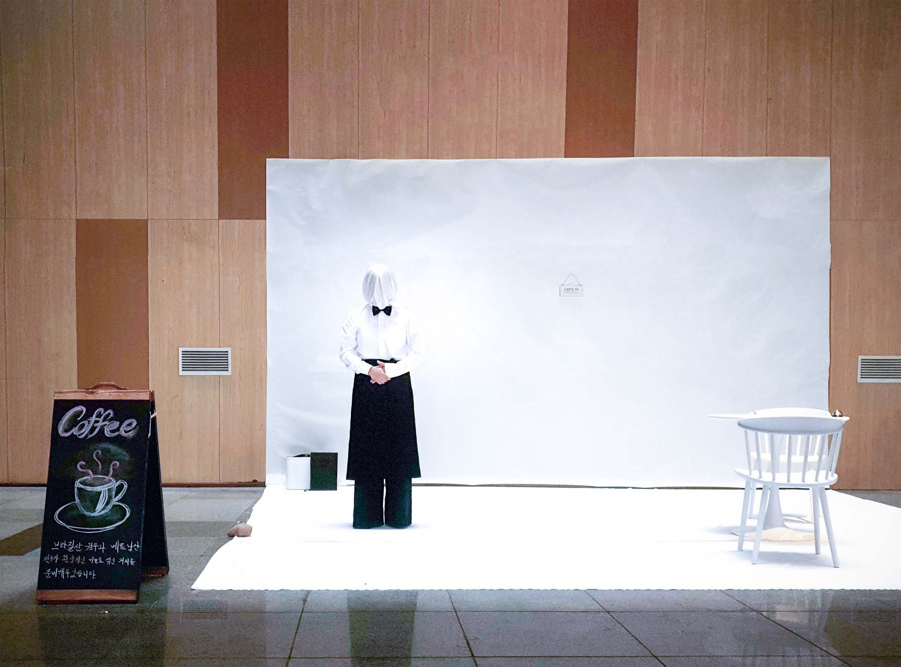
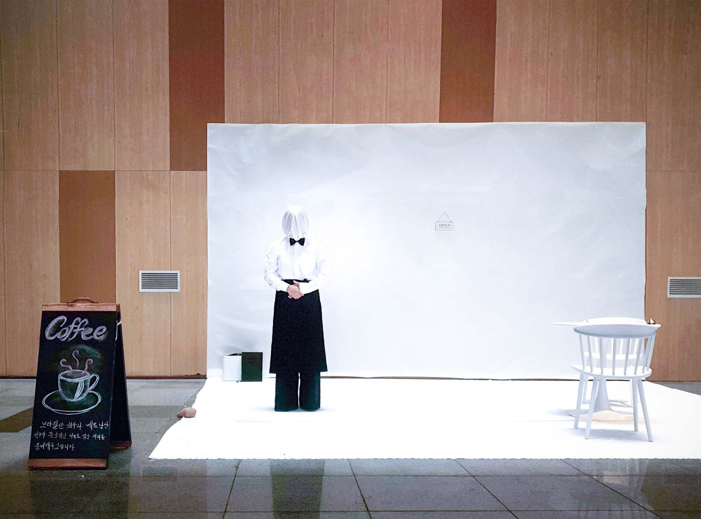
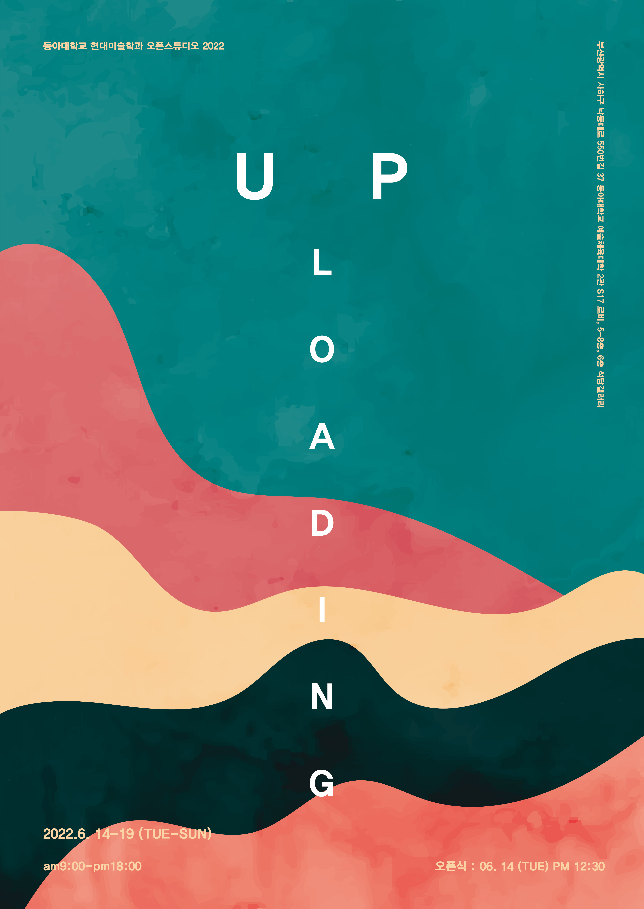
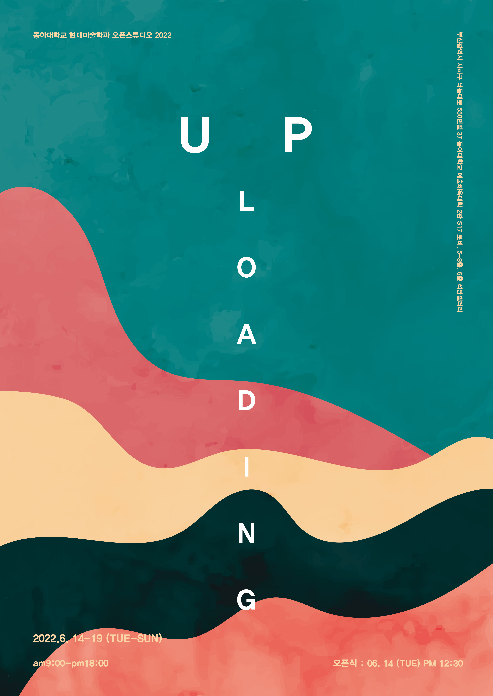

 

업로딩: UP_loading
장소: 동아대학교 승학캠퍼스 예술체육대학 2관(S17) 로비, 5-8층, 석당갤러리
작가: 동아대학교 현대미술학과·미술학과 재학생 전체
기획: 오윤영, 안혜진, 설시은
홍보: 서주영, 손가은, 금민지
도록 링크: https://drive.google.com/file/d/1tWu0mHAd6KyhOnmOtIw_CV9cLz7ifYov/view?usp=sharing
우리는 무언가 새로운 것을 해야 한다는 압박감에 멈춰있을 수 없다. 이러한 삶 속에서 잠시 멈추거나 느리게 움직이는 것은 로딩하는 과정과 같이 나아가기 위해 노력하며 성장하는 중간 지점인 것이다. 우리는 잠시 멈춰서서 자신에 대해 알아간다. 이번 오픈스튜디오 《업로딩: UP_Loading》은 빠르게 흘러가는 시간 속에서 함께 고민하며 성장하고 있는 우리의 작업물을 공개함으로써 관람객에게 전송하여 소통하고 우리만의 새로움을 정의하고자 마련되었다.
새로움은 살아 숨 쉬는 생물과 같이 시대에 맞게 변화해나간다. 변화는 일렁이는 물결처럼 찾아오는 것이다. 우리는 다양한 실험과 시도를 통해 끊임없이 묻고 답하는 과정을 각자만의 표현방식으로 작품에 담아내고자 한다. 타인과의 관계 맺음 속에서 자신을 마주하게 되며, 끊임없이 영향을 주고받기에 우리의 삶은 마치 네트워크 관계망처럼 끊어낼 수 없이 다른 이들과 촘촘히 연결되어 있다. 새로움 속에서 부재와 결핍을 충족시키려는 성장 욕구가 나타나고 이는 작업 동기가 된다. 우리는 각자의 눈으로 본 세상의 모습을 작품을 통해 보여주며 서로 연결되는 지점을 찾고자 한다.
사고를 확장하며 자신을 드러내는 과정에서 항상 새로운 표현을 탐구해야한다는 생각은 우리를 따라다닌다. 제작 과정에서 어떤 것을 만들어내도 비슷한 것이 이미 존재한다는 허탈감과 새로움이라는 현상 속에서 계속해서 싸워나가는 우리에게 새로움이란 무엇인지 고민하게 되었다. 새로움은 상대성을 지니면서도 미묘한 가치를 지닌다. 우리는 기존의 것을 학습하면서 각자가 가진 고유한 감각을 통해 개인마다 다른 결과물을 만들어낸다. 의식하지 않은 채로 떠오르는 감각은 새로움을 자아내게 하여 이미 존재하던 것에서 벗어나 스스로 탈바꿈하는 창조적인 힘을 가지게 되며, 우리의 작업물은 형상 그 이상의 거대한 세계를 표상한다.
외부와 우리 사이에 존재하는 벽은 실기실을 개방함으로써 허물어지고, 고민의 과정과 구축된 감각은 작품이 되어 전시에 업로딩된다. 우리는 각 개인을 소규모 시스템으로, 사회를 대규모 시스템으로, 작품을 보여주고 소통하며 공개하는 과정 자체를 업로딩 시스템으로 보았다. 실기실이라는 소규모 공간에 머물러 있던 개개인의 세계관이 연결되고 대규모 시스템인 건물 전체와 사회로 확장해 나와 관람자의 감상을 이끌어내어 다시금 관람자 개개인이라는 소규모 시스템으로 옮겨간다. 기존의 교육 장소이자 각자가 모인 창작 공간인 실기실이 오픈스튜디오라는 매개를 통해 소통 공간으로 변화되는 것은 새로움을 만드는 하나의 생성 구조가 되며 파편화되어 있던 것들이 방만한 생태로 묶이는 것이다. 우리는 기존의 틀에서 벗어나 다양함이 묶이는 체계를 만들고자 했고, 이 과정 자체를 새로움을 만들어내고 소통하는 업로딩이라 정의하였다.
오픈스튜디오 공간 분할은 크게 로비, 석당 갤러리, 실기실 세 구역으로 나뉜다. 로비와 6층 석당 갤러리는 《일렁임의 문》이라는 하나의 소주제로 묶이며 공간 특성에 따라 구분된다. 과거, 현재, 미래의 경계가 모호한 동시대 속에서 끊임없이 사유하는 예술의 영역에 놓인 우리는 계속해서 파편화되고 해체된다. 전시의 입구이자 출구가 되는 로비는 소통의 공간이자 순환하는 사유의 공간이다. 업로딩 과정의 디지털 찌꺼기와 같이 파편화되고 중심부의 것에서 벗어난 형태가 추상적인 작업, 오브제, 소외된 것들을 표현한 작품을 위주로 배치하여 우리만의 일렁임을 하나의 흐름으로 보여주고자 한다. 건물 안쪽에 있는 석당 갤러리의 공간을 내면의 모습이라 보았기 때문에 해체되고 조립되는 과정의 자아 혼란과 두려움, 내면적 고통과 결핍에 대한 욕구 등의 감정을 다루고자 한다. 이러한 감정의 일렁임은 문을 통해 새어나와 관람자를 이끌며 내부로 초대한다. 실기실 및 복도, 기타 구역에서는 우리의 끊임없이 묻고 답하는 과정과 다양한 시도를 여과없이 보여주어 새로움에 대한 답을 찾아나가며 소통하고자 하는 움직임을 보여주고자 한다.